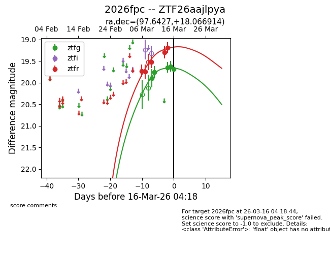
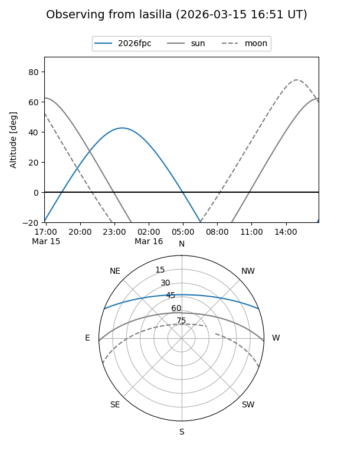
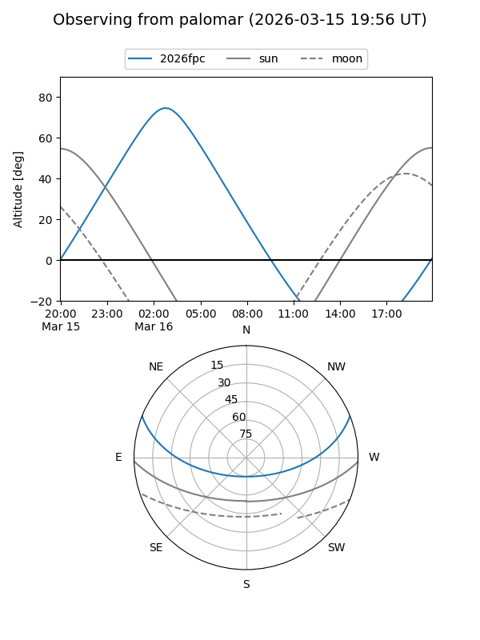
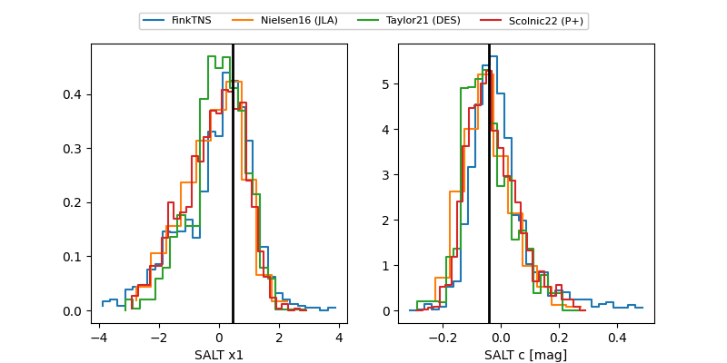

2026fpc
Target 2026fpc at 2026-03-16 04:20
Aliases and brokers:
FINK: link
Lasair: link
ALeRCE: link
TNS: link
YSE: link
alt names
ZTF26aajlpya (ztf,fink_ztf)
2026fpc (tns,yse)
Coordinates:
equatorial (ra, dec) = 97.6427,+18.06691
equatorial (HMS+DMS) = 06:30:34.26,+18:04:00.89
galactic (l, b) = (194.5057,+3.69712)
Flags:
Photometry:
last ztfg=19.68, ztfr=19.19
5 ztfg, 5 ztfr detections
Lightcurve

Visibility


Additional plots
